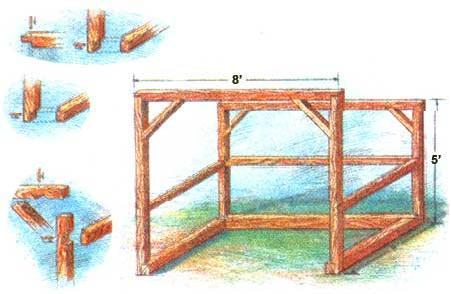

Here is a woodshed from real wood-burner’s country - the ski mountains of Vermont - where city dwellers can find a few days’ respite from smog, traffic, and the rat race in the crisp mountain air of places that have invigorating names like Mt. Snow, Suicide Six, Mad River Glen and Smuggler’s Notch. Days are for hurtling through fresh powder on mile-long downhill runs, and evenings are for nursing sore muscles and a cool drink in front of a roaring wood fire.
Wood fires are as much a part of the life as the snow itself, and hundreds of cords of hardwood are burned each season (most of it in free-breathing/freestanding metal fireplaces that radiate heat well, but burn clean - although the wood smog that chokes inversion-prone Western ski areas in Colorado is never a problem in the free-flowing air of Vermont’s Green Mountains).
The woodsheds that help make the evenings glow and crackle must be filled by local woodsmen as fast as they are emptied by vacationers, and they are marvelously designed for the use. The best have full open fronts for easy access, no floors to trip over or low roofs to bump a head on. They are not so deep that either loader or unloader has to step in more than one pace. Roofs are steep enough in back to shed the heaviest snowfall and have a front overhang that is so sharply pitched it will never collect snow to avalanche off and dump down the back of a wood gatherer's neck … and that juts out just far enough to keep rain or snow off the wood.
Here is how to build your own Vermont-ski-country woodshed. Dimensions and materials are given for 1 1/2 cord, 2-, 3-, and 4-cord capacities. When empty in the summer, any size can serve to store the garden tools or mower. Add a folding shelf in back and use it as a potting shed. Or, add a floor, frame and close in the front, cut door and window openings and you have a garden house, work shed, or playhouse for the kids.
Best of all, the shed is timber framed - built from square timbers with woodplank siding rather than being “stick-built” from scrawny little two-bys and plywood that demands precision measurement and must be designed in four-foot increments to avoid endless ripping of awkward 4-foot-by-8-foot plywood sheets.
You can build the frame by simple butt nailing or you can enjoy the challenge of building half-lap, notched, or full mortise-and-tenon joints. Peg the joints together if you like. Side with clapboards or shingles to match the house, or make a mini-barn with rough-sawn board and batten siding.
First, decide how large a shed you need. Fuel wood is distributed by the cord: 128 cubic feet that is traditionally defined as an 8-foot-long, 4-foot-high pile of 4-foot-long logs as stacked in the woods by old-time ax men. If you buy wood or haul it from your own woodlot one cord at a time, the 1 1/2-cord model is perfect; the extra half-cord gives you plenty of fuel while you wait for a 1-cord refill. The footprint of this shed is only 9 feet by 5 feet. You can fit it in alongside the front drive or anywhere in the yard that’s most handy for both delivery and daily use. With a length of oak trunk for a chopping block to one side, the whole installation takes up only 70 or 80 square feet.
All sizes are a little under 8 feet high at the roof peak and are wider than they are deep for easiest wood handling. The 2 1/2-cord model is four feet wider than the 4 foot by 8 foot basic 1 1/2-cord version. The 2-cord model is 2 feet wider than the basic 1 1/2-cord version. The 3-cord shed is 2 feet wider and deeper, at 12 feet wide and 6 feet deep. The 4-cord model adds another 2 feet of width for a shed that’s 14 feet wide and 6 feet deep.
Your common stick-built structure is designed around standard 8-foot framing lumber and 4-foot-by-8-foot sheet goods. But, with timer framing and plank siding, dimensions can be adjusted to fit the materials on hand rather than vice versa. Decide the approximate size shed you need, price beams and siding, and adjust your finished dimensions to fit the materials you like best. Timbers are timbers. But your siding choices range from silky-surfaced cedar clapboards, milled tongue-and-groove barn board, fine cedar shingles, T-1-11 grooved plywood, rough-cut boards or even sawmill slabs. The chart gives the footage required and illustrations show how each is applied.
All building lumber is sold in true lengths of 8 feet, 10 feet, 12 feet and longer; increasing in 2-foot increments. Square-beam widths come in two-inch increments from 4 inch to 8 inch nominal measure. Actual dimensions will be up to 3/4 of an inch less than nominal. Siding boards come 1 inch nominal (3/4 inch actual) or 5/4 inch nominal (1 inch actual) thick in widths that vary anywhere from 4 inches to just under a foot depending on type and finish and whether the edges are left square or milled to mate in shiplap, tongue-and-groove, or other joints.
Shop around for the best deal on materials. Recycled lumber is fine. The cheapest new lumber will be rough-cut boards bought fresh-cut at the mill (but, air-dry wet lumber for six months, laid out flat in ricks with spacer-boards every 2 feet between each layer). If you can get a real deal on 10-foot beams, build a 10-foot-wide building. If the best siding turns out to be 6-inch nominal planks that measure an actual 5 1/2 feet, design your shed’s back and sides in 5.5-inch increments. But before you cut any lumber, lay out the siding along the foundation beams to see how it all fits. For example: Theoretically, the back of your 10-foot (120-inch)-wide building would carry 21.8 of the 5.5-inch-wide boards. You can’t stretch a timber to hold an even 22, and if you open up a few joints to fit in only 21, it could look bad. You could squeeze in 22 - and trim .4 inches off the edges of both end boards … or trim the frame by .8 inch to hold an even 21 … any way you like it is fine. But - again - before you do any cutting, lay out frame and siding edge-to-edge to see how it fits for real.
The detailed instructions that follow will build you a basic 4-foot-by-8-foot building from the most commonly available lumberyard materials. The frame takes 12 to 15 8-inch-, 6-inch-, and 4-inch-square timbers at about $5 apiece. Siding requires 16 nominal 1-inch-thick-by-6-inch-wide-by10-feet-long pine planks that will actually measure 3/4-inch thick and anywhere from 5-and-1/2-inches to 5-and-3/4-inches wide and cost about $5 per board. The roofing is one standard 25-sq.-ft-to-weather bale of random width #2 white cedar shingles costing some $10/package plus seven 8-inch-long lengths of 1-inch-by-3-inch strapping (wood furring strips) to fasten the shingles to. Siding and roofing nails plus hardwood dowels for pegged joints will cost a few dollars more. Total cost should be $200 to $250 for new materials from a lumberyard - half that for rough-cut lumber from a sawmill - still less if you scrounge from demolition sites and recycling centers. Pine shingles are half the price of cedar but last half as long unless treated annually with wood preservative.
Place the shed where it can be filled and emptied most quickly and conveniently for your wood-burning style. I like to haul one easy truckload (a half cord) of 4-foot logs from the woods at a time, dump them in front of the shed, chain-saw them all to length on a sawbuck and then split them as they are burned; nothing like splitting the next day’s stove logs and chopping out small splits and kindling for the cook range to work up an appetite of a winter’s evening. So, I need a good sized wood-work-up apron in front of my own shed. You may have wood cut, split, and stacked by the cordwood dealer and will want to locate the shed directly on the drive. Or you may prove how life oughta be lived by skidding whole trees out of the woods with a team … so you need a lot of space behind the shed to maneuver 30 feet of tree trunk on a singletree and chains behind a matched pair of Belgians that steam in the winter cold, and stamp and shake their great lovely heads and strain for the barn and their evening grain.
Don’t even consider building a woodshed with a wood floor. You can’t toss logs for years onto anything but expensive, 2-inch-thick oak or it will get pounded to splinters. You can build your shed on rotproof CCA-infused (pressure-treated, or “PT”) beams or creosoted landscape timbers and set it right on the sod. But the bottom course of fuel logs can get so wet and buggy you won’t want to bring them in the house … and eventually they’ll form a floor of punky wood that can infest the shed with dry rot, termites or carpenter ants. Plus, in time, the building is bound to settle unevenly and look skewed. Better is to spend the time to put in a good-draining base of rock or gravel.
Grub out sod and the upper 6 inches or so of dark topsoil - down to light-colored, hard subsoil in an area about a foot larger all around than the shed’s base (dig out a 9-foot-by-5-foot rectangle for an 8-foot-by-4-foot 1 1/2-cord shed). Scrape the surface so you have a flat, level surface of undisturbed soil (no matter how hard you tamp it, dips or holes filled with loose soil will settle, making the surface uneven). Then, fill the shallow rectangular pit with an even layer of crushed rock or clean gravel. For the most solid foundation, fill in 2-inch layers, tamping well. You can rent a commercial motorized or hand tamper, or pound it with a wood post … or drive the truck back and forth over it.
This shed is heavy and sturdy enough to stand up to most weather, but if you get really high winds - say you live in a tornado alley in the Midwest, on the ocean or big lake or at the narrow end of a windy valley, you’d do well to anchor the foundation. Dig 2-foot-deep upside-down mushroom-shaped holes at each corner. When the foundation beams go in, drill holes through the corners and attach standard “L”-shaped building anchors. Set the bent ends into concrete poured into the anchor holes as you place the foundation.
The table lists major construction materials for four sizes of shed. Four-, 6-, and 9-inch square PT frame timbers are specified as much for their proportions and rugged good looks as for structural virtue. The raw material and true dimensions of square beams will vary, though any Building Code- or Pressure Treatment Association-approved PT lumber will be from structural-grade wood - usually Southern Yellow Pine in the East and Douglas Fir in the West. An 8-footer will measure at least that in length. But, a nominal 6-inch-square beam can actually measure anywhere from 5-and-7/8 inches to 5-and-3/8 inches a side. Size really doesn’t matter so long as the outer faces of all frame members are set in square and in the same plane so siding will go on evenly.
Be sure your ground-level timbers at least are certified for Ground Contact (with tags or stamps reading “Ground Contact,” “.40CCA” or “Treated to Rejection”). A lesser PT grade or untreated lumber is fine for the rest, but don’t waste time or money on rejects. Look the beams over carefully-sighting down each face lengthwise. Reject any that are warped, crooked, twisted, or that have large cracks, rot holes, or knots that seem to be working out. In particular, the beam that spans the front opening must be clear. If the lumber pile’s been picked through so thoroughly that only poor boards are left, demand that a new rick be unstrapped (or find another lumberyard). Again, be sure that each timber has at least one perfect surface to face outward and keep the siding fair. Siding boards want straight sides and no serious twists or warps, but loose knots will only increase good-drying air flow through the fuelwood.
The most reasonably priced PT lumber is a bilious green from the copper in the rot-proofing, but will weather to a silvery gray where the rain hits it, and to a dark brown where it doesn’t. Or it can be stained or painted to match the shed siding.
Here, step-by-step, is how to build a basic 4-foot-by-8-foot shed using simple (but challenging) butt, notch and lap joints. See the illustrations and drawings for more elaborate joinery.
The Base
First off, lay out your three base timbers, the 8-foot rear beam, and the two 4-foot side members in a long “U” shape. Snug down into the gravel with the most even sides up. Notch half laps (see Image Gallery) in upper face of the rear beam and the undersides of the side beams. Mate joints and with a protractor, carpenter’s angle, or equal length string across the diagonals, make sure the corners are perfect 90-degree angles. Snug timbers an inch or two down into the rock base. With a long board and a spirit level on top, make sure the base is level all around.
You can fasten each joint with a triangle of six-penny galvanized nails or a single 6-inch galvanized spike. Or, do it right and peg them. With a spade bit on the electric drill or a fine old wood bit on a brace or hand auger, drill 1-inch diameter holes through the center of the corner laps and peg the joint by hammering in 6-inch lengths of kiln-dried inch-diameter hardwood dowel. To make a simple but elegant vertical joint, cut 9-inch dowels, sink them down 6 inches and shave the up-protruding 3-inch ends to points. Drill a 1-by-2 hole up into the centers of the vertical corner posts and hammer them down on the pegs.
All this is lost to posterity’s view forever, but you'll know its there and so will someone in the 22nd century who decides to disassemble your masterpiece and take it to a museum devoted to how we used to build with wood.
If you must floor your shed, set a second 8-foot PT timber out in front - lapping it into the fronts of the side beams - to make a rectangle. To support the flooring, run a third 8-footer down the middle, or (better) lap three 4-footers front to back into the long beams-one down the center and the others evenly spaced to each side. Peg joints.
Floor with 3/4-inch plywood or 2-inch-thick rough-cut oak planks laid across the floor beams (if you can, get the oak direct from a sawmill - you’d pay furniture-stock prices buying oak from most lumber yards). Nail on the plywood with galvanized flooring-underlayment nails (they have a ribbed shank to keep the flooring from pulling out over time). Oak planks can be fastened with flooring nails. Better are old-style hand-cut nails (leave the heads poking up). Pegged floors are fun, but a lot of bother for a shed where they’ll be covered with firewood most of the year. They don’t stay put unless you stove-dry hardwood pegs till they are bone dry, then saw wedge notches into both ends.
With a blind wedge stuck part way into the bottom end (so it will be pushed up into the lower end of the peg as it hits the hole bottom), hammer them deep into tight drill holes, then insert long wedges into the top notch … like you see spreading the end of a hammer handle to “wedge” it securely into the hole in the steel head. Any way it’s made, the floor will last longer if you cap the front edge with a length of hole-drilled strap iron or angle steel at least 3 inches wide. Fasten it with 3-inch lag screws sunk through the flooring and into the underlying front beam.
Didn’t I tell you this shed was designed to last 200 years?
Lintel Frames
Now, fabricate the front and rear lintel frames - upside-down “U”s of two vertical beams connected by a horizontal - the front one at least 6-feet-by-6-inches high and the rear one 5 feet. Diagonal braces at the corners add to both strength and appearance. Lap and peg both the corner and brace-attachment joints. Note in the photos that the kerfs (saw cuts) defining the edges of those open-to-view joints are made carefully and slowly with a thin, fine-toothed hacksaw used to section moldings in a miter box - this so the joints will be very snug.
Set assembled lintel frames at corners of base beams (or floor) and attach with temporary braces so all beams are plumb.
Rafters
Fabricate five identical “upside down V”-shaped rafters from 4-inch square stock. The front beams are 1 foot, 6 inches long and lap joined at about 120 degrees to 5 feet, 6 inches long rear beams.
You should peg the roof joints if no others, as they are open to view. Cut the pegs an inch longer than the joints are wide and use a thin hand-saw to make inch-deep kerfs in each end. Hammer pegs through holes drilled through the middle of each joint, leaving a scant half-inch of peg jutting from each side. Into each end, hammer ¼-inch-thick, inch-wide, 1-and-1/2-inch-long wedges trimmed from the ends of knot-holed and unusable roofing shingles.
You can indulge yourself and secure the wedges in place by drilling 1/8-inch holes at an angle through one side of each peg … aiming to go through the wedges. Then hammer in lengths of 1/8-inch wood dowel (whittled to a point at the business end like a nail) to act as pins.
Use a straight-edge to mark and hand saw to cut identical pairs of 45 degrees, vertical sided/level-topped bird-mouth notches front and back into the undersides of all the “upside-down-V” rafters arranged atop the lintels so the rear of each rafter extends three or four inches beyond the rear lintel (see Image Gallery).
For looks alone, you will want angle braces supporting the rafters at each end. These look best if they make an equilateral triangle. With notched rafters set temporarily on ends, locate and mark end braces for lap joints.
Measure and mark lap-cuts to fasten the mid-beams - one vertical brace between rafter and floor at the sides and two along the back if plank siding is to run horizontally … one horizontal along the back and each side if siding is to go on vertically (which is easier and drains rain better, so is longer-lasting). If you want to finish the siding job with clapboards or shingles, measure for horizontal braces. You can sheathe over them with vertical boards or plywood to support the finish siding.
Frame Assembly
Take lintel frames down, lay flat, and cut out all lap joints in frame and braces. Then, put the lintels back up to stay. Fasten vertical corner posts to base beams with the upright pegs mentioned above, or “toe-nailed” with spikes through (pilot holes in) uprights and into base beams at an angle.
Attach all brace timbers with 1-inch pegs or a triangle of 3-inch galvanized nails in each lap joint.
A roof can blow off, and I’d not trust pegs or even nails. Fasten rafters to lintels with two long drywall-type screw or with lagscrews (big coarse-threaded fasteners with square or hex heads so you need to use a ratchet wrench on them).
Siding
Attach simple plank-siding with two galvanized siding nails through boards and into each underlying brace. Make nail lines straight between boards, level along frame timbers.
To attach clapboards or shingle siding to match your house, cover frame with sheet-goods or plank sheathing. Don't weatherproof with house wrap or builders paper. You want air to flow through to keep the cordwood dry. Nail on 6-inch-wide trim boards top and bottom and at both corners, following the pattern of the house. Then, working from the bottom up, fasten clapboards or shingles in level, even-edged rows. Overlap upper clapboards over lower by at least an inch. Overlap shingles half their length or more, and cover all seams between shingles -lay them out according to the house pattern. Unless you want nails bristling from the sides and back, fasten finish siding with staples and a thin bead of strong builders cement from a caulking gun. Siding boards should be cut to fit under the rafters at the back.
Where siding extends above the angled rafters at each end, snap a chalk line and trim even with the rafter line … unless you plan to fasten shingles to strapping or furring strips. If so, fasten strips before you attach siding (see “Roofing” below). Then, trim siding even with upper edge of strips - so shingles fastened atop them will come to the edge at sides and back.
Fasten a length of 1-inch lumber trimmed as needed to cover the front and rear faces of the roof beams. Nail on with two siding nails per beam-end.
Roofing
You can nail on plywood and cover it with asphalt shingles or attach a tin roof or a translucent roof of corrugated fiberglass, though wood shingles look best. Cheapest and easiest is to figure out how much shingle you want to expose or “leave to weather;” then nail on furring strips to act as nailers for each row. A bundle of standard 16-inch shingles, with 5 inches left to weather, will cover 25 square feet of roof. The shed has something a bit over 50 square feet of area. Get two bundles and plan to leave 6 inches to weather. Nail 1-inch-by-3-inch furring strips across the rafters at peak and eaves, and every 6 inches in between. For best waterproofing, nail a sheet of thick plastic or roofing felt (a more genteel name for “tarpaper”) over the furring.
Shingles snap easily. Lay two overlapping courses of shingles at the front, with ends of shingles jutting out an inch beyond the nailer below. Then fasten shingles in odd widths with sides just touching, and so each upper layer covers all seams in the layer below. Even when leaving 4 inches of 16-inch shingles to weather, I like to bed them in a bead of roofing cement laid from a caulking gun some seven inches above the edge - so it will be covered by a topping course of shingles if some oozes out. And, with the glue, I prefer to fasten with an electric stapler and the longest staples I can get into the furring - 2 staples per shingle. Without glue, use 7/8-inch galvanized roofing nails. Leave 1/2 inch of shingle extending beyond each side. Use a sharp utility knife to trim edges even.
Use a saw to trim shingle ends even along the roofpeak as you finish each shed. Cap the roof with an 8-foot length of 8-inch-wide roofing felt or aluminum sheathing bent over the peak and held on by a pair of 1-inch-by-4-inch-by-8-foot boards - with one overlapping the end of the other to form a sharp edge along the roof line.
Trim
Roof’s on and you can finish off the shed as you wish. Lengths of 1-inch-by-3-inch or -4-inch lumber under the eaves will dress it up. Thin strips along the eaves will seem to support the edges of the shingles (but be sure to leave enough shingle jutting beyond the edges). Odd leftover boards can go to trim seams inside the shed. If you want an old-style look, cover the seams between vertical-board siding with 1-inch-by-2-inch wood strip “battens.”
Stain or paint as you wish. I prefer to leave wood natural, and slop a good dose of clear deck preservative inside, outside, on, and under the shingles even when I’m finished, and then I treat the outside again every two or three years.
Finally, if wood joinery gives you as much satisfaction as it does me, use a small chisel and cut your name or initials and the year into the middle of the front face of the rear horizontal beam where woodburners can admire it for the next few hundred years.
|
STEVE KATAGIRI The best sheds have full open fronts for easy access, and no floors to trip over or low roofs to bump a head on. |
STEVE KATAGIRI Dimensions and materials are given for 1 1/2 cord, 2-, 3-, and 4-cord capacities. When empty in the summer, any size shed can be used to store garden tools or a mower. |
 STEVE KATAGIRI The basic timber frame. |
|
STEVE KATAGIRI Frame with square-timber rafters attached. |
Shingles and roof cap go on over horizontal strapping atop rafters. |
After siding is attached, a front can be trimmed out. |